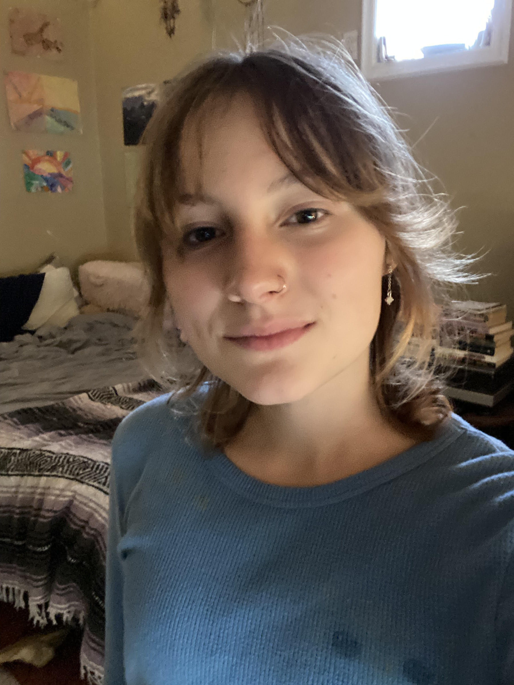

Welcome!
This is my website.
About this site
The purpose of this website is to serve as a platform to share me, my work, and my interests. Feel free to explore my world! I've made it a goal to make everything included as self-explanatory and comprehensible as possible with labels, lists, and descriptions where I've found it fitting.
About me
Hi! My name is Olivia J. Clark (J short for Jordan), and I'm from Oak Ridge, TN and majoring in physics at the University of Tennessee in Knoxville. My interests are far and wide. Academically, I fell in love with physics over the course of my junior year in high school and have stuck to it and its adjacent fields ever since. I've wanted to be a teacher since I was a kid, so for that reason and more, I'm planning to pursue academics for as long as I can in hopes of having a career as a teaching and researching professor. Aside from academics, I am a dog mom and like to hike, bike, run, and rock climb in my free time. I also enjoy music, writing, painting, drawing, and photography.
^ That's me!